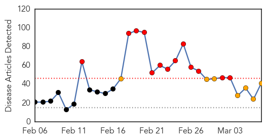
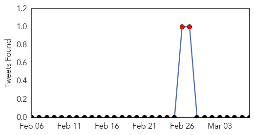
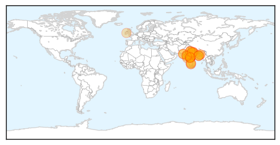
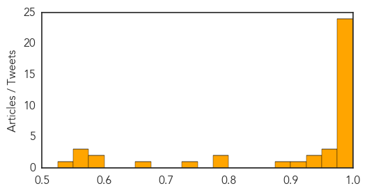
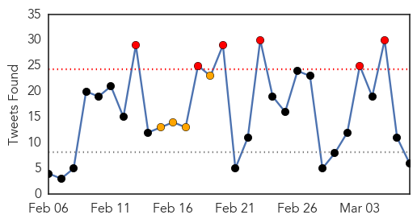
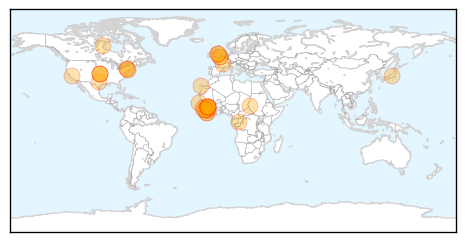

Swine Flu
30-Day Web Trend
13 alerts, 7 warnings

30-Day Twitter Trend
2 alerts, 0 warnings

Article Locations
Article Confidences
Top Articles:
- 1.000
- Swine flu in India: Pakistanis warned against travelling to India
- 0.999
- Unprepared Sindh issues swine flu alert
- 0.999
- Swine flu in WB: H1N1 virus claims another life in Bengal
- 0.999
- Swine flu claims 30 more lives across India; over 24,000 affected
- 0.999
- IEDCR: Three infected with Swine Flu virus but no need for alarm
- 0.999
- H1N1 Swine Flu: Rights group warns Pakistanis against travelling to India
- 0.999
- Country is ready to tackle Swine Flu : IEDCR
- 0.999
- Sindh health dept cautions against Swine Flu -
- 0.996
- Rights group warns Pakistanis against travelling to India
- 0.996
- Swine flu Death toll Reaches 324 and 5,411 Cases
- 0.996
- Rights group warns Pakistanis against travelling to India
- 0.996
- Rights group warns Pakistanis against travelling to India
- 0.996
- Human Rights Organization in Pakistan Warns Pakistanis Not To Visit India
- 0.996
- Rights group warns Pakistanis against travelling to India
- 0.995
- First swine flu case confirmed in Manipur
- 0.994
- Rights group warns Pakistanis against travelling to India
- 0.993
- Rights group warns Pakistanis against travelling to India
- 0.993
- Rights group warns Pakistanis against travelling to India
- 0.993
- Swine flu alert
- 0.992
- Rights group warns Pakistanis against travelling to India
- 0.990
- Rights group warns Pakistanis against travelling to India
- 0.990
- 30 fresh deaths take swine flu toll to 1,319 in India
- 0.989
- Swine flu death toll reaches 332 in Gujarat
- 0.981
- Corporate India spreads awareness of Swine Flu epidemic
- 0.971
- Swine flu case suspected
- 0.960
- Kovai Woman Latest H1N1 Victim
- 0.953
- Make Tamil Nadu free from communicable diseases: Minister
- 0.945
- Swine flu claims another life in Bengal
- 0.938
- Swine flu: Gujarat has no plans to use CM relief fund
- 0.915
- Ahmedabad woman beats swine flu, delivers healthy baby
- 0.886
- Two die of swine flu in Himachal, toll now 13
- 0.797
- Patients treated for H1N1 incurring Rs. 3,500 per day
- 0.796
- Mulayam hospitalised, undergoes swine flu test
- 0.744
- Two die of swine flu in Himachal, toll now 13
- 0.664
- Mulayam Singh Yadav hospitalised, swine flu suspected
- 0.590
- Mob ransacks hospital after swine flu death in Bengaluru
- 0.585
- SP Supremo Mulayam Singh Hospitalised, Swine Flu Suspected
- 0.572
- Latest News & Gossip on Popular Trends at India.com
- 0.555
- Mulayam Singh Yadav down with swine flu, party says nothing to worry
- 0.553
- Mulayam admitted to hospital, Sonia wishes him quick recovery : India, News
- 0.550
- Mulayam in hospital with swine flu symptoms
Top Tweets:
-
No tweets found for Mar 07, 2015
Ebola
30-Day Web Trend
0 alerts, 0 warnings

30-Day Twitter Trend
6 alerts, 4 warnings

Article Locations
Article Confidences

Top Articles:
- 1.000
- The biggest threat to stopping Ebola is thinking that it’s over now
- 1.000
- Ebola Virus Epidemic and Outbreak News
- 1.000
- Last Ebola patient is released in Liberia Republican American
- 1.000
- Ban on health workers' travel to Ebola-hit nations remains
- 1.000
- Systems for Rapidly Detecting and Treating Persons with Ebola Virus Disease — United States
- 1.000
- Ban on health workers’ travel to Ebola-hit nations remains
- 1.000
- WHO to begin large-scale testing of Ebola vaccine in Guinea
- 0.999
- Exclusive: Guinea says Ebola patients sent home after botched blood tests
- 0.998
- Spanish Health Authorities Discard Ebola After Another Alert Over Suspected Case in Alicante
- 0.998
- Kenya : Africa is on the rise, but Ebola menace exposes our selective pan-Africanism
- 0.996
- The survivors, orphans and workers the disease left behind
- 0.996
- Soldiers from Sierra Leone return home
- 0.995
- Ebola Survivors Emerge as New Focus for Care
- 0.995
- African tourism acts to shake off Ebola stigma
- 0.994
- First Ebola survivors talk of hope and despair in Guinea
- 0.991
- Report: As Ebola wanes, other countries remain vulnerable
- 0.979
- Ebola's Youngest Victims: Liberian Children Face New Health Challenges As Outbreak Subsides
- 0.970
- Experimental Ebola Vaccine Appears Successful in At Least One Case
- 0.966
- Nina Pham, Dallas nurse who contracted Ebola, sues hospital
- 0.951
- Police killing of black teenager sparks protest in US
- 0.951
- Sierra Leone’s vice president expelled from ruling party
- 0.951
- Helen Flanagan flaunts baby bump in style
- 0.951
- Sierra Leone VP Sam Sumana expelled as ruling APC on the brink of implosion
- 0.951
- Sierra Leone: Surviving Together, in Ebola-Hit Sierra Leone
- 0.951
- Microsoft Windows also vulnerable to FREAK encryption bug
- 0.951
- 57 arrested in cyber crime operations in Britain
- 0.947
- A Happy Milestone: ‘Zero Patients’ in Liberia
- 0.924
- After Ebola, Can The CDC Earn Back Our Trust?
- 0.921
- British Ebola nurse appears on misconduct charge over whether symptoms were concealed
- 0.911
- W/B, Japan to provide Psychological support to Ebola victims
- 0.753
- WHO Begins Ebola Vaccine Trial in Guinea
- 0.521
- Minister visits Manchester to thank UK Ebola workers
Top Tweets:
- 0.861
- Sierra Leone athlete arrested in London for overstaying visa because Ebola ... - The Independent http://t.co/bSRFfh74vC ebola EVD
- 0.858
- Photos: Canadian Forces Ebola fighters return from Sierra Leone - Ottawa Citizen http://t.co/PJREYSh0k6 ebola EVD
- 0.804
- African tourism acts to shake off Ebola stigma - Yahoo News http://t.co/ndtLdEPSW7 ebola EVD
- 0.753
- Police: No case of Ebola found in Franklin Square - News 12 Long Island http://t.co/r2InLuNLKj ebola EVD
- 0.735
- Ebola vaccine given for just second time; a 7th person in Chicago tested for ... - Chicago Sun-Times http://t.co/lEnRUhdRvz ebola EVD
- 0.735
- Ebola vaccine given for just second time; a 7th person in Chicago tested for ... - Chicago Sun-Times http://t.co/e1g5mZmYj9 ebola EVD
- 0.735
- Ebola vaccine given for just second time; a 7th person in Chicago tested for ... - Chicago Sun-Times http://t.co/9pXzJW8vwd ebola EVD
- 0.667
- RT: Ebola vaccine given for just second time; a 7th person in Chicago tested for deadly virus: None... http://t.co/oZkzXVrjFU Eb…